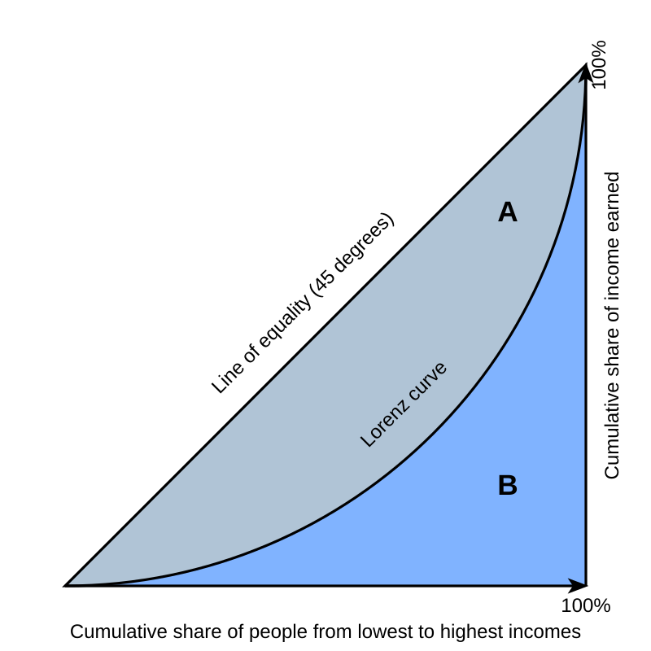

로렌츠곡선(Lorenz Curve)은 미국의 통계학자 로렌츠(M. O. Lorenz)가 창안한 것으로, 소득분포도를 나타낸 도표에서 소득 불균등을 나타내는 곡선입니다. 소득 분포가 균등할수록 직선에 가까운 균등분포선이 대각선으로 그려집니다.
간단 요약
• 소득 분포의 불균등 정도를 시각적으로 보여주는 곡선
• 균등분포선(대각선)과 실제 로렌츠곡선의 차이가 클수록 소득 불평등이
큼
• 지니계수(Gini coefficient) 산출의 기초 자료로 활용됨
로렌츠곡선의 해석
• 가로축: 전체 인구(또는 가구)의 누적 백분율
• 세로축: 전체 소득(또는 재산)의 누적 백분율
• 모든 사람이 동일한 소득을 가진다면 곡선은 대각선(균등분포선)이 됨
• 실제로는 하위 계층이 전체 소득의 적은 부분을 차지하므로 곡선이
아래로 휘어짐

경제에서의 의미
• 소득 불평등 정도를 한눈에 파악할 수 있음
• 사회 정책, 조세 정책 등에서 불평등 해소의 필요성을 판단하는 지표로
사용
• 지니계수와 함께 경제 불평등 연구에 널리 활용됨
실생활 예시
• 한 국가의 인구 중 하위 20%가 전체 소득의 5%만을 차지한다면,
로렌츠곡선은 대각선보다 아래에 위치
• 곡선이 대각선에 가까울수록 소득 분포가 평등함을 의미
정책적 활용
• 정부가 소득 재분배 정책을 시행하면 로렌츠곡선이 대각선에 가까워짐
• 소득 불평등이 심화되면 곡선이 더 아래로 휘어짐
• 경제 불평등 해소를 위한 정책 평가에 활용
요약
로렌츠곡선은 소득 분포의 불평등 정도를 시각적으로 보여주는 중요한
도구입니다. 곡선이 대각선에 가까울수록 평등, 멀어질수록 불평등이
심함을 의미합니다.